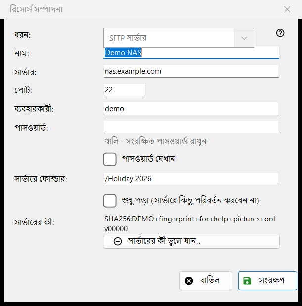
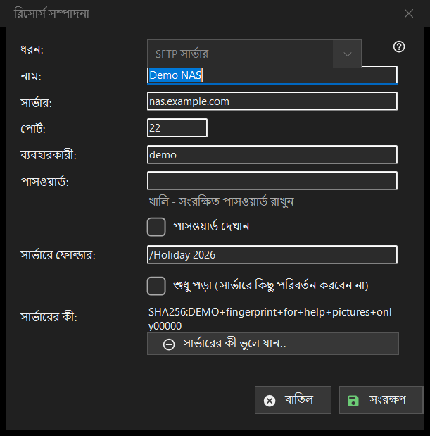

রিসোর্স সম্পাদনা
এটি কীসের জন্য
একটি সংরক্ষিত সার্ভার বা নেটওয়ার্ক ফোল্ডারের ফর্ম। রিসোর্স তালিকার যোগ করুন.. এটি খালি খোলে, শিরোনাম নতুন রিসোর্স; সম্পাদনা করুন.. এটি পূরণ করা অবস্থায় খোলে, শিরোনাম রিসোর্স সম্পাদনা; আর ফোল্ডার বাক্সে লেখা sftp:// ঠিকানা এটি আগে থেকে পূরণ করে খোলে।


এই ক্রমে
- ধরন বেছে নিন: SFTP সার্ভার বা নেটওয়ার্ক ফোল্ডার (SMB)।
- রিসোর্সের একটি নাম দিন এবং সার্ভারের ঠিকানা ও পোর্ট, অথবা নেটওয়ার্ক পথ লিখুন।
- ব্যবহারকারীর নাম ও পাসওয়ার্ড লিখুন।
- সার্ভারে ফোল্ডার ঠিক করুন এবং সেখানে কিছু বদলানো না গেলে শুধু পড়া বিকল্পে টিক দিন।
- সংরক্ষণ করুন চাপুন।
উপাদানসমূহ
ধরন
ধরন ঘরটি রিসোর্স তৈরির সময় বাছা হয়: SFTP সার্ভার (পোর্ট 22, ফোল্ডার /) বা নেটওয়ার্ক ফোল্ডার (SMB)। সংরক্ষিত রিসোর্সের জন্য তালিকাটি নিষ্ক্রিয় থাকে, কারণ সংরক্ষিত পাসওয়ার্ড ও সার্ভারের কী একটিমাত্র ধরনের। SMB-র জন্য ঠিকানার ঘরের নাম নেটওয়ার্ক ফোল্ডার এবং সেটি \\server\folder ধরনের পথ নেয়; পোর্ট ও ফোল্ডার ঘর শুধু SFTP-র জন্য।
নাম, সার্ভার ও পোর্ট
নাম ঘরের লেখা তালিকায় দেখায়; খালি থাকলে সার্ভারের ঠিকানা ব্যবহার হয়। সার্ভার ঘরে নাম বা IP ঠিকানা থাকে আর পোর্ট ঘরে 1 থেকে 65535-এর মধ্যে একটি সংখ্যা। সার্ভার বা পোর্ট বদলালে আমদানি করা রিসোর্সের সঙ্গে আসা অন্য ঠিকানাগুলো বাদ যায়, যাতে সংরক্ষিত পাসওয়ার্ড কখনও এমন ঠিকানায় না যায় যা আপনি লেখেননি।
ব্যবহারকারী ও পাসওয়ার্ড
ব্যবহারকারী ও পাসওয়ার্ড ঘর। পাসওয়ার্ড আপনার Windows অ্যাকাউন্টের জন্য এনক্রিপ্ট করে রাখা হয়; তালিকায় শুধু তার একটি রেফারেন্স থাকে। সংরক্ষিত রিসোর্সের জন্য বাক্সটি খালি থাকে এবং ইঙ্গিত দেখায় খালি - সংরক্ষিত পাসওয়ার্ড রাখুন: কিছু লিখুন শুধু সেটি বদলাতে চাইলে। পাসওয়ার্ড দেখান বিকল্পটি শুরুতে বন্ধ থাকে। নতুন রিসোর্সের জন্য পাসওয়ার্ড লাগে।
ফোল্ডার ও শুধু পড়া
সার্ভারে ফোল্ডার হলো সেই ফোল্ডার যা ভিউয়ার প্রথমে খোলে, / দিয়ে শুরু হওয়া একটি পথ। শুধু পড়া (সার্ভারে কিছু পরিবর্তন করবেন না) বিকল্পটি ভিউয়ারকে রিসোর্সটি শুধু-পড়ার ধরে নিতে বলে: তাতে কিছু সরানো বা কপি করা যায় না, আর তাতে কিছু মোছা বা নাম বদলানো যায় না।
সার্ভারের কী
সার্ভারের কী ঘরটি এই সার্ভারের জন্য মনে রাখা ফিঙ্গারপ্রিন্ট দেখায়, অথবা জানায় যে সেটি প্রথম সংযোগে দেখা যাবে, যেখানে আপনি তা নিশ্চিত করেন। সার্ভারের কী ভুলে যান.. বোতামটি শুধু তখনই দেখা যায় যখন একটি কী মনে রাখা আছে। এটি আগে জিজ্ঞেস করে (ডিফল্ট উত্তর না) এবং ব্যাখ্যা করে: সার্ভার নতুন করে ইনস্টল হয়ে থাকলে এটি স্বাভাবিক, নইলে কেউ তার ছদ্মবেশ নিতে পারে। এটি শুধু কী মুছে দেয়: পরের সংযোগে নতুন ফিঙ্গারপ্রিন্ট দেখানো হবে এবং আবার জিজ্ঞেস করা হবে।
সংরক্ষণ করুন
সংরক্ষণ করুন ঘরগুলো যাচাই করে এবং তাদের নিচে লাল রঙে প্রথম সমস্যাটির নাম বলে: ঠিকানা, পোর্ট, ফোল্ডার, ব্যবহারকারীর নাম বা না-দেওয়া পাসওয়ার্ড। বাতিল কোনো পরিবর্তন ছাড়াই ফর্ম বন্ধ করে।